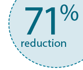
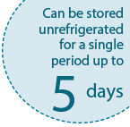

GRANIX® gained >34% share of the US short-acting
G-CSF hospital market in its first 17 months1 |
| |
| GRANIX is a leukocyte growth factor indicated for reduction in the duration of severe neutropenia in patients with nonmyeloid malignancies receiving myelosuppressive anticancer drugs associated with a clinically significant incidence of febrile neutropenia. | |
|
| |
| Important Safety Information |
| Splenic rupture: Splenic rupture, including fatal cases, can occur following the administration of human granulocyte colony-stimulating factors (hG-CSFs). Discontinue GRANIX and evaluate for an enlarged spleen or splenic rupture in patients who report upper abdominal or shoulder pain after receiving GRANIX. |
|
| |
| Additional Safety Information continued below |
| |
| Real-world experience |
|
Teva’s
short-acting
G-CSF was first introduced in Europe in 2008 and is available in 52 countries*2 | | | In the first 17 months after GRANIX was introduced to the US, it gained >34% share of the short-acting G-CSF hospital market1 |
| | | Proven efficacy |
|
A 71% reduction in duration of severe neutropenia vs placebo (1.1 days vs 3.8 days, p<0.0001)3 |  | | – Efficacy was evaluated in a multinational, multicenter, randomized, controlled Phase III study of chemotherapy-naïve patients with high-risk breast cancer receiving doxorubicin (60 mg/m2 IV bolus)/docetaxel (75 mg/m2)3 |
| | | | Safety profile |
|
Safety established in
3 Phase III studies3 | | | – The most common treatment-emergent adverse reaction that occurred at an incidence of at least 1% or greater in patients treated with GRANIX at the recommended dose and was numerically 2 times more frequent than in the placebo group was bone pain |
| | | Flexible storage† |
| 
After being stored in the refrigerator, GRANIX can
be left unrefrigerated for a single period up to 5 days at a controlled room temperature and if not used, returned to refrigeration
|
|
|
| |
*As of August 2015 |
| |
| † Avoid shaking. The solution should be visually inspected prior to use. Only clear solutions without particles should be used. Exposure to 23° to 30°F (–1° to –5°C) for up to 72 hours and temperatures as low as 5° to –13°F (–15° to –25°C) for up to 24 hours do not adversely affect the stability of GRANIX. Protect from light. |
| |
| |
Important Safety Information
(continued) |
| |
| Acute respiratory distress syndrome (ARDS): ARDS can occur in patients receiving hG-CSFs. Evaluate patients who develop fever and lung infiltrates or respiratory distress after receiving GRANIX, for ARDS. Discontinue GRANIX in patients with ARDS. | | Allergic reactions: Serious allergic reactions, including anaphylaxis, can occur in patients receiving hG-CSFs. Reactions can occur on initial exposure. Permanently discontinue GRANIX in patients with serious allergic reactions. Do not administer GRANIX to patients with a history of serious allergic reactions to filgrastim or pegfilgrastim. | | Use in patients with sickle cell disease: Severe and sometimes fatal sickle cell crises can occur in patients with sickle cell disease receiving hG-CSFs. Consider the potential risks and benefits prior to the administration of GRANIX in patients with sickle cell disease. Discontinue GRANIX in patients undergoing a sickle cell crisis. | | Capillary leak syndrome (CLS): CLS can occur in patients receiving hG-CSFs and is characterized by hypotension, hypoalbuminemia, edema and hemoconcentration. Episodes vary in frequency, severity and may be life-threatening if treatment is delayed. Patients who develop symptoms of CLS should be closely monitored and receive standard symptomatic treatment, which may include a need for intensive care. | | Potential for tumor growth stimulatory effects on malignant cells: The granulocyte colony-stimulating factor (G-CSF) receptor, through which GRANIX acts, has been found on tumor cell lines. The possibility that GRANIX acts as a growth factor for any tumor type, including myeloid malignancies and myelodysplasia, diseases for which GRANIX is not approved, cannot be excluded. | | Most common treatment-emergent adverse reaction: The most common treatment-emergent adverse reaction that occurred in patients treated with GRANIX at the recommended dose with an incidence of at least 1% or greater and two times more frequent than in the placebo group was bone pain. |
|
Please click here for Full Prescribing Information. |
| |
For more information, visit GRANIXhcp.com. |
| |
References: 1. This information is an estimate derived from the use of information under license from the following IMS Health Information Service: IMS National Sales Perspective. GRANIX micrograms by non-federal hospital channel March 2015. IMS expressly reserves all rights, including rights of copying, distribution, and reproduction (micrograms calculated as eaches x strength) 2. Data on file. Teva Pharmaceuticals: Filgrastim MA Approvals Worldwide. August 2015. 3. GRANIX Prescribing Information. North Wales, PA: Teva Pharmaceuticals; 2014 |
| |
| | ©2015 Cephalon, Inc., a wholly-owned subsidiary of Teva Pharmaceutical Industries Ltd.
GRANIX is a registered trademark of Teva Pharmaceutical Industries Ltd.
All rights reserved. GRX-40796 October 2015 | | |
|